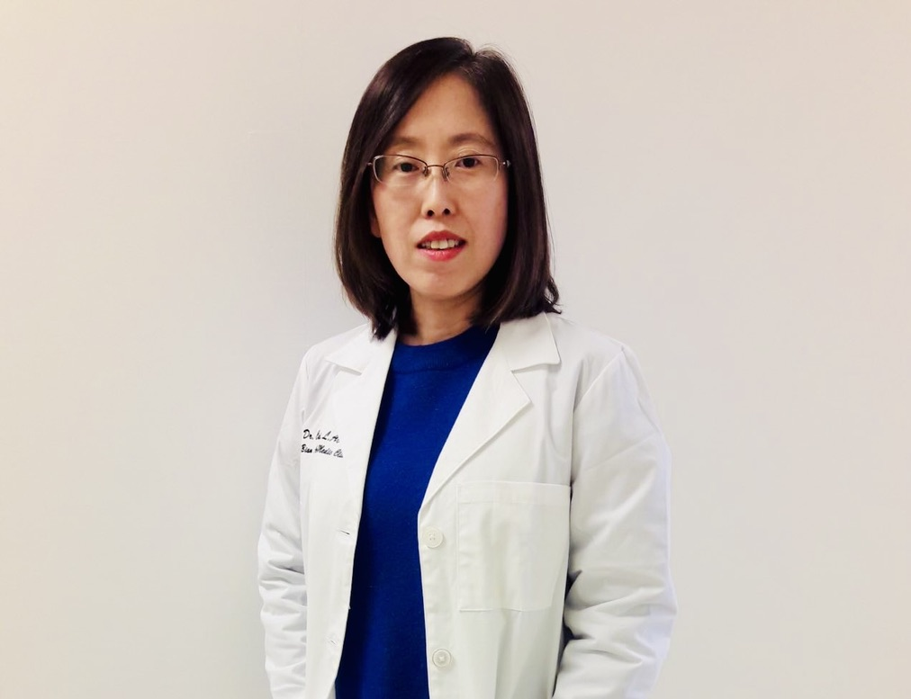
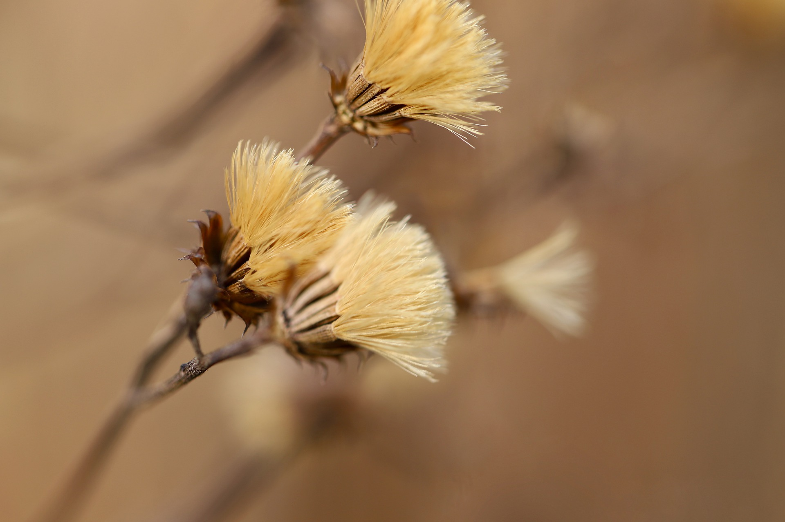
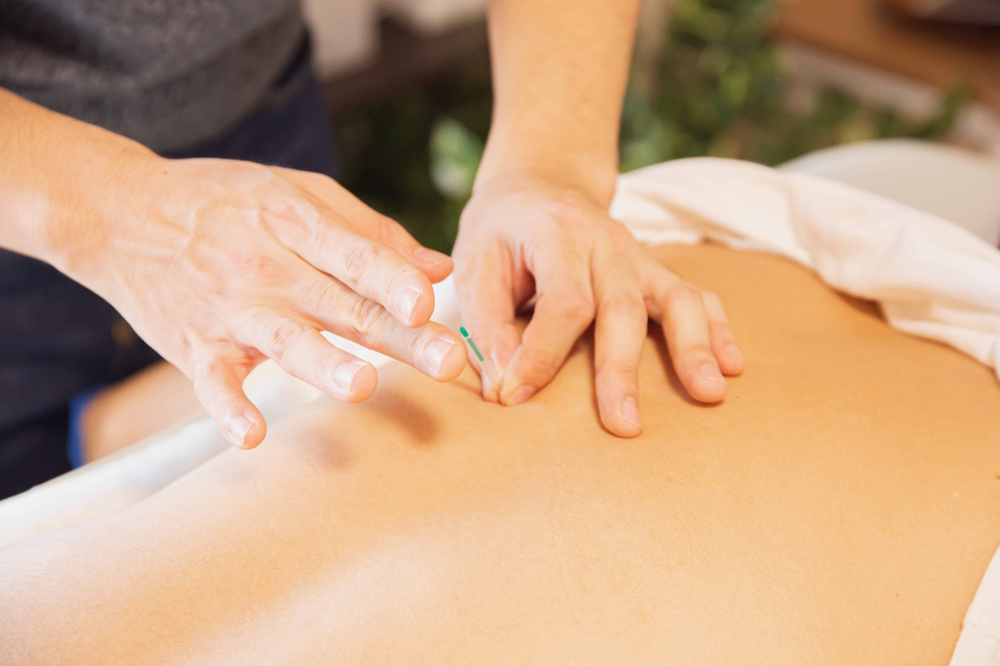

Acupuncture
Traditional acupuncture care focused on supporting balance, recovery, and wellness.
Yan Bian Acumedic Clinic
A restored wellness website concept for a family-owned acupuncture and Chinese herbal medicine clinic serving patients through natural, thoughtful, and personalized care.
About
Yan Bian Acumedic Clinic is a family-owned practice. Ms. HongHua Cui is a second-generation L.Ac, OMD, continuing a healing tradition started by Ms. Xu about forty years ago.
The clinic has served many patients through acupuncture and Chinese herbal medicine, helping people recover and care for their health in natural ways.

Services
This restored static version preserves the original service concept while removing backend scheduling and account dependencies.
Traditional acupuncture care focused on supporting balance, recovery, and wellness.
Herbal wellness support inspired by traditional Chinese medicine practices.
Patient-centered consultation experience designed to understand needs and guide care options.
Products
The original full-stack project included online shopping concepts. This version preserves the product idea as a static visual archive.

Static product showcase from the original project concept.

Preserved visual direction for future product exploration.
Project Restoration
This website was originally built as a full-stack application using React, Node, GraphQL, Apollo Server, MongoDB Atlas, and Heroku. It has been restored as a lightweight HTML, CSS, and JavaScript website for long-term preservation, GitHub Pages hosting, and portfolio documentation.
Contact
This static version is maintained as a portfolio restoration project documenting the original clinic website concept.
Back to Top